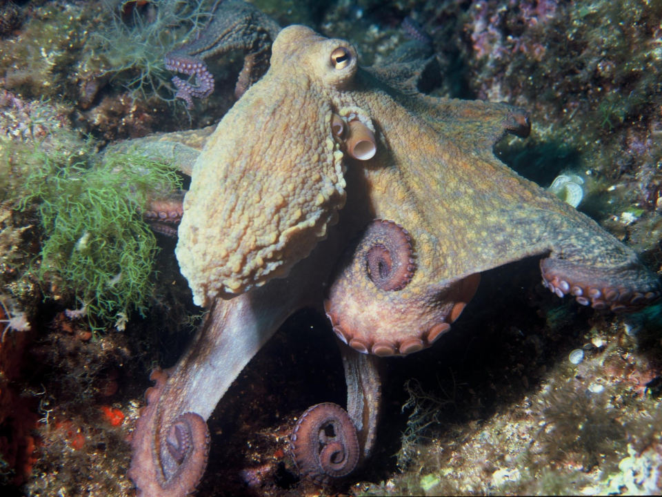
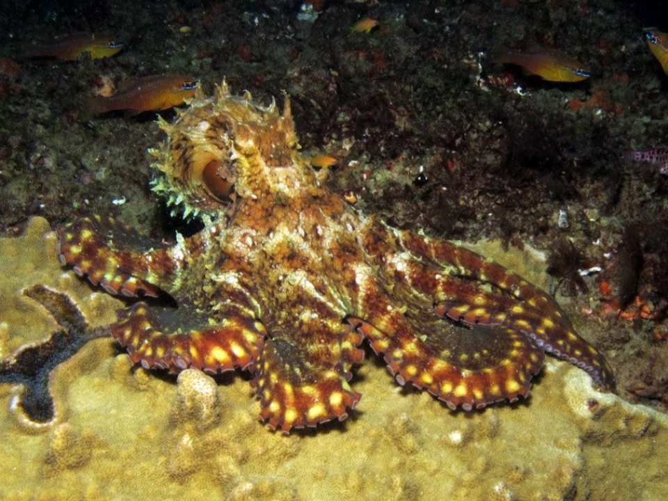
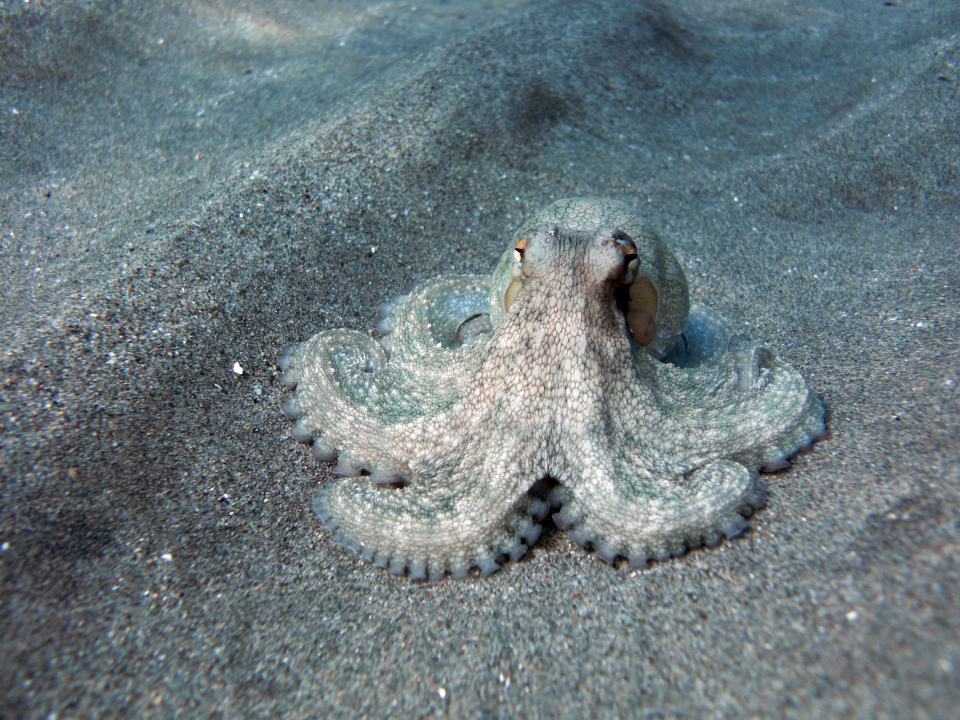
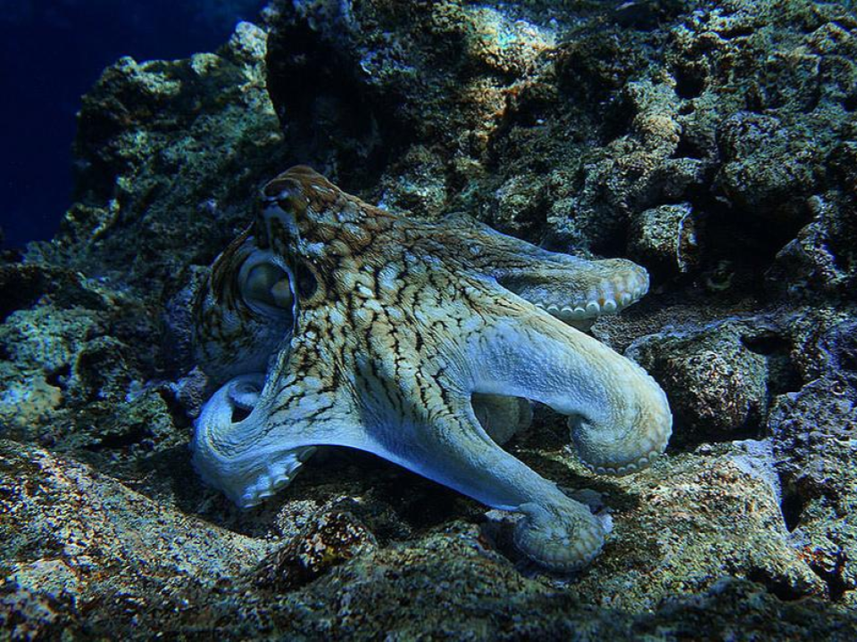

1 / 4

This octopus is using camouflage to hide in the reef were it live, this is why it was named the reef octapus.
2 / 4

This octopus is using camouflage to hide in the reef aswell but this time it changed its body form to be more spicky and look sharp to blend in with the rock behind it. It also changed its color to a dark yellow-orange and brown to also blend in with the rock behind it.
3 / 4

This octopus is is smaller and not fully grown this one is also using camouflage to hide in the sand becouse it is on the move and not close to the reef.
4 / 4

This octopus is also using camouflage to hide in in a rock and coral formating and it changed its body form to blend in with the rock that it is sitting on.
❮ ❮
❯ ❯
These animals use camouflage to help them survive and this is how they have not gone extinct
Other animals that live in the Galapagos
here are some of the animals in the ecosystem that might affect the life of the Galapagos Reef Octopus, directly and indirectly.
Flamingo,
Flightless cormorant,
Frigate bird,
Galapagos fur seal,
Galapagos hawk,
Galapagos land iguana,
Galapagos mockingbird,
Galapagos penguin,
Galapagos tortoise,
Hawkmoth,
Large painted locusts,
Lava gull,
Lava lizard,
Manta ray,
Marine iguana,
Red batfish,
Reef fish,
other Reef octopus,
Rice rat,
Sally Lightfoot crab,
Scalloped hammerhead shark,
Sea turtle,
Snowy egret,
Vampire Finch,
Waved albatross,
Whale shark,
White-cheeked pintail duck,
these animals will affect the food web of the Galapagos Reef Octopus especially the ones in the water but when the Galapagos Reef Octopus will eventually go on land because of the introductions of the goby fish (an invasive species) then it will be affected by the animals on land as well if not more than the water species.
Goby introduction
The Round Goby (Neogobius melanostomus), an extremely invasive species which has already become a permanent resident in many of the great lakes, had been unintentionally transported to the Galapagos islands. A cargo ship that had passed through the gobies native area, the black sea, collected a few specimens in its Ballast tank(the underside of a ship that holds water to keep it balanced). As a species suited for salt and freshwater it was able to integrate itself as a ferocious predator in the island ecosystem.
The food chain reacts
The gobies’ introduction devastated the aquatic food chain. They prayed on the eggs of the other smaller fish, as well the Sunfish and octopus eggs. Due to how quickly the goby reproduced, they spread across the reef, with minimal predators to keep them in check. The lobsters and crabs ate the gobies when possible, but the fish was extremely agile, and it was difficult for the ambush predators to adapt, especially when the goby began preying on their eggs and young, decreasing the population. Soon, the reef octopuses food supply was decreased substantially, as the variations within the population started to become more advantageous, the species as a whole began to evolve.
Big Changes
With the destruction the gobies brought to the food chain, the octopi were going to need to adapt to survive. The octopus closer to land realized they were able to go very near shore for food, like lava lizards or marine iguana eggs, but this new environment also posed new challenges. If the octopus dried out on land, it would die, so the octopi with thicker skin survived to pass on their traits to the next generations. Along with thicker skin, the octopus's new diet was a bit hard to consume with a smaller beak. Those who couldn’t eat the new diet tended to die of starvation, leading to the bigger beak becoming a dominant trait. Mobility on land was also a bit of an issue. The octopi with bigger mantels couldn’t get around as fast, so the ones with small mantels survived to pass on their genes.
Big Changes Continued
Another issue moving to land provided was the sun. The hot Galapagos sun made it hard for octopi to stay on land long enough to catch a meal because if they stayed too long they would dry out and die. So being the intelligent creature it is, the octopus realized it would have to go on land at night when the chance of drying out was lower. It started By going on land later and later in the day, then into the night, until eventually, its entire circadian rhythm changed. A Large change to assist in keeping from drying up, is to develop a thick layer of mucus covering the Octopus. This mucus is secreted from the skin and can not only keep it hydrated but keep predators at bay as well. The mucus would make it harder to hold onto the octopus and could be mildly irritating to the eyes or mouth. This is a common evolution that has been adopted by many semi-terrestrial fish such as the “walking catfish”. The smaller size also proved to be an advantage and became one of the dominant traits.
The land octopus
The land octopus spends most of the day resting in the sea but at night the land octopus hunts small creatures like lava lizards, young Marine Iguana, and iguana eggs. The land octopus has retained similar traits and is still very stealthy but lost its ability to use ink. It has become considerably smaller and has become denser. It is still able to change color but is less able to fit into extremely small areas and change its texture. It has also developed much stronger and more rigid tentacles made for moving and hunting without the added buoyancy of water. Its eyes have become much more accustomed to seeing in the dark, and it only goes hunting on land at night, while it still lays its eggs and rests under water. It is able to hold its breath for many hours while hunting on the beach and it doesn't go very far from the water. These extra adaptations help this animal to not dry up and ultimately survive on land.
Where the land octopus fits into the food chain
As the species overtime reproduces to have the aforementioned adaptations, the species is integrated into the food chain on land. The now land octopus evolves to become a tertiary consumer. It preys on lava lizards and the eggs of marine iguanas, and it is eaten by the apex predator, the Galapagos hawk. The added tertiary consumer would greatly change the populations of the species, due to the added creature to eat and be eaten. For example, the algae population would increase as a result of the decreased marine iguana population. The marine iguana population would be decreased as a result of the added predator, the land octopus. It is an ambush predator hiding by changing color and waiting for something to come by, it will also actively hunt iguana eggs by hiding near nests in rocks by squeezing into places the adult iguanas cannot reach.